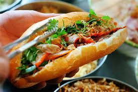
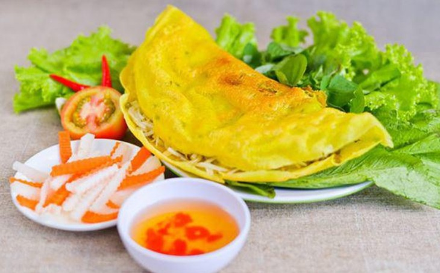
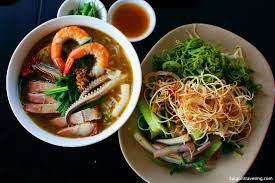
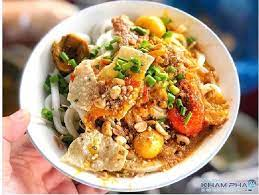
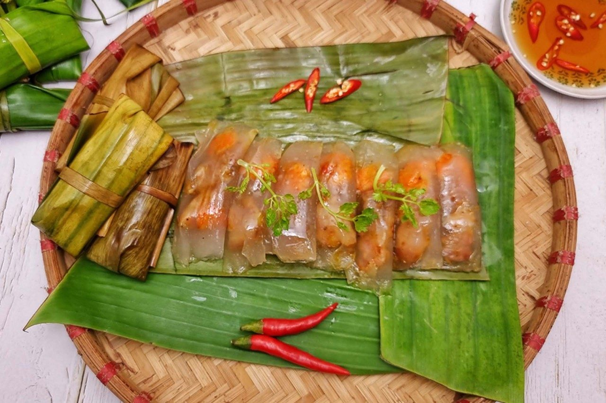
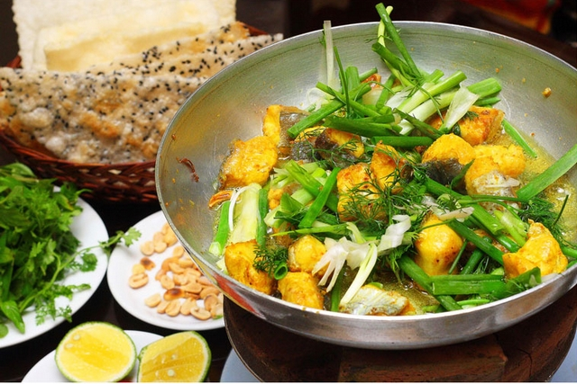

Saigon
- Banh mi
- Banh xeo
- Bun mam

We call Vietnamese sandwich is "Banh mi". The ingredients include Vietnamese ham which is made from pork, cilantro, pickle, and pate, Vietnamese mayonnaise.

Banh xeo is a special food that is migrated to Saigon from the Vietname southwest provinces. The reason we call it "Banh xeo" is because of the sound when you cook like "xeo" in Vietnamese pronunciation. When you look at it, you will think about Tacos in the US, but it is not like that. The flour is from rice and it is mixed with coconut cream. You will eat it with fish sauce and vegetables. (Fish sauce is the traditional sauce of Vietnam, it is the main ingredient in most food).

As I mentioned above that fish sauce is a special sauce of Vietnamese food. It was made from fermented fish. "Bun mam" is also migrated to Saigon from southwest of Vietnam, it is also cooked from fermented fish. When you smell it, it has a bad smell, but when you eat it, it is very good. Vietnamese eat Bun mam with noodle, seafood, pork and vegetable.
Danang
- Mi Quang
- Banh bot loc

Mi Quang or Quang-Style Noodles is part soup and part salad. It is a widely popular noodle dish from Quang Nam Province in central Vietnam and the neighboring city of Da Nang to the north. Mi Quang is rice noodles with an assortment of fresh vegetables and Vietnamese herbs, tossed together with a small amount of intensely flavored broth made from pork and/or chicken stock

Banh Bot Loc is a small, chewy, translucent pork and shrimp dumpling, generally eaten as a snack in Vietnam. The pork-and-shrimp-filled dumpling is wrapped in a small piece of banana leaf, steamed in large batches and served with a side of sweet chili dipping sauce
Hanoi
- Pho
- Cha ca

As you know that pho is very famous in most of the Vietnamese restaurants in the US. Pho is original from the north of Vietnam. After that, when the northern people move to the South, pho was introduced in Saigon. However, if you visit a pho noodle shop in the North, you will realize that it is different from the taste of you eat it in the US as well as with the South of Vietnam. The North Vietnamese does not eat pho with hoisin sauce and vegetable like in the South. They just eat Pho with the small fried dough.

A distinctive Hanoi delicacy, cha ca is white fish seasoned with garlic, ginger, turmeric, and dill served on sizzling pan. Diners also get a bowl of rice noodles, peanuts, chopped spring onions, parsley, nuoc cham sauce, and red chili slices, all of which are meant to be mixed together with the turmeric fish.Cha ca is so popular amongst locals that there’s a street in Hanoi Old Quarter.